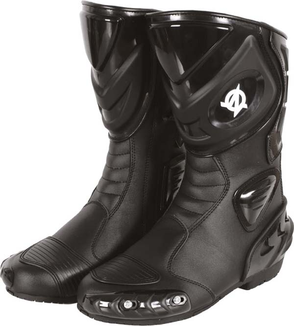

<div class="swiper-slide">
	<div class="a">
	<div class="row">
		<div class="col-lg-8 col-md-6 col-sm-6 col-xs-12 col-lg-offset-4 col-md-offset-6 col-sm-offset-6">
			<p class="title-a main-color10 dinpro-light">CRX</p>
		</div>
	</div>
	<div class="row">
		<div class="col-lg-4 col-md-6 col-sm-6 col-xs-12">
			<a href="img/crx.jpg" class="magnificPopup" title="CRX" data-slide="crx.html"></a>
		</div>
		<div class="col-lg-8 col-md-6 col-sm-6 col-xs-12">
			<p class="title-b">
				<span class="main-color10 dinpro-medium">KOLOR:</span> <span class="dinpro-light">CZARNY</span><br />
				<span class="main-color10 dinpro-medium">NR KATALOGOWY:</span> <span class="dinpro-light">A0901/08/10</span><br />
				<span class="main-color10 dinpro-medium">CENA:</span> <span class="dinpro-light">399 ZŁ</span><br />
				<span class="main-color10 dinpro-medium">ROZMIARY:</span> <span class="dinpro-light">36-48</span>
			</p>
			<p>&nbsp;</p>
			<p>Buty sportowe, wykonane z syntetycznej skóry nie absorbującej wody. Zachowują bardzo dobrą relację jakości do ceny i posiadają wszystkie najważniejsze cechy obuwia, które powinno się stosować do jazdy na motocyklach sportowych i sportowo-turystycznych.</p>
			<p>&nbsp;</p>
			<p>
				- wykonane z syntetycznej skóry<br />
				- zapinane na zamek osłonięty dodatkową patką z rzepem<br />
				- zewnętrzne ochraniacze goleni, kostek i pięty<br />
				- boczny ochraniacz typu slider<br />
			</p>
		</div>
	</div>
	</div>
</div>